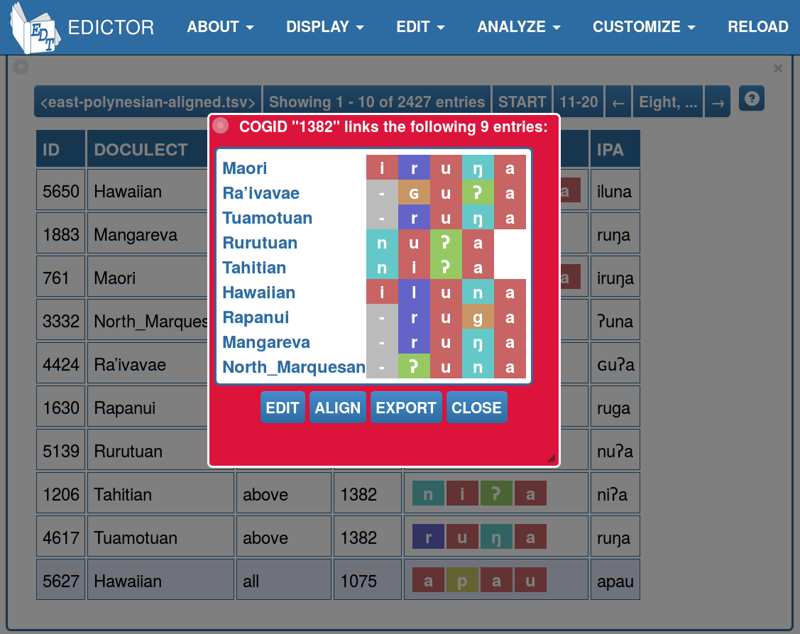
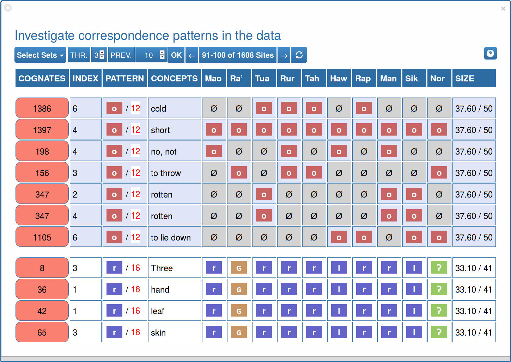

Sequence Comparison with LingPy¶
This tutorial will run you through the major steps needed in order to infer cognates automatically with LingPy (List and Forkel 2017) from linguistic word list data and to export the data into various formats so that you can either inspect them using tools like the EDICTOR (List 2017), or further analyse them, using software like SplitsTree (Huson 1998) or BEAST (Bouckaert et al. 2014).
Basically, this tutorial assumes that you have at least an undergraduate level understanding of historical linguistics (particularly the basic methods used in historical language comparison, often summarized under the label "comparative method"), requiring only working knowledge of Python and command line operation.
It is required that you have installed both LingPy in the version 2.6 for Python3 (as this tutorial will assume that you use Python3) available on GitHub, and (as a plus) the python-igraph package (Csárdi and Nepusz 2006). Furthermore, in order to follow all examples given in this tutorial, it is useful to work with the IPython suite, which is very convenient for testing code pieces directly against the Python interpreter.
The tutorial is divided into different blocks, during which different aspects of sequence comparison will be illustrated from the concrete perspective of LingPy. In order to understand fully all that is going on, however, this tutorial won't be sufficient, and it is recommended that those who are interested in the algorithmic and conceptual details of LingPy's major algorithms for sequence comparison have a closer look at the book Sequence Comparison in Historical Linguistics (List 2014) in which the most comprehensive state of the art is reflected. More recent papers might occasionally be mentioned in order to account for those aspects of sequence comparison which have been changed since then, but the book on sequence comparison (which is also freely available for download) is still the best starting point.
The tutorial is divided into the following parts:
- Hands on the Data: Preparing, Loading, and Testing Word List Data
- Phonetic Alignment
- Automatic Cognate Detection
- Evaluation
- Exporting the Data
1 Installation Instructions¶
1.1 Confirming that Python and LingPy are not installed¶
In order to proceed with LingPy installation, make sure you have at least a standard Python interpreter installed. Open a command prompt and run the command below, which, if Python is installed, will return a message informing the version of Python that is installed (something similar to "Python 2.7.12").
$ python --version
In case you are using or planning to use Python 3, the command below will return something like "Python 3.5.2".
$ python3 --version
To verify if LingPy is installed you can either run your Python interpreter and try to load the library with import lingpy (which will return an ImportError if the library is missing) or copy and paste the command below to your command prompt (changing python to python3 if needed).
$ python -c "import pkgutil; print('LingPy is installed' if pkgutil.find_loader('lingpy') else 'LingPy is not installed')"
1.2 Updating and preparing the system¶
Before proceeding with LingPy installation, make sure your system is up to date. Here we reproduce the commands for the most common Linux distributions, but most of them have similar or equivalent commands.
sudo apt update && sudo apt upgrade # for Debian/Ubuntu Systems
yum update # for Fedora
pacman -Syu # for Arch systems
Following the best practices of Python development, we recommend you install LingPy and all its dependencies with the pip package manager. pip is included in all recent version of Python, but your distribution might have removed it. You can check if pip is installed by running the command below, which should return a message like pip 9.0.1 from /usr/local/lib/python3.5/dist-packages (python 3.5) (depending on your setup, the command might be pip3 for Python 3).
$ pip --version
If pip is not installed, we recommended that you properly install pip according to its instructions instead of relying on your distribution repositories, which might be outdated and can lead to errors and conflicts. If you want to use Python3, but have also Python2 installed (which is the norm), make sure that pip is pointing to the correct Python version (on some machines, the Python3 version is, for example, called pip3).
1.3 Installing LingPy¶
The LingPy library can be installed either by using the packaged version on the Python Package Index (PyPI) or by making a full local copy of the development file on GitHub (some information can also be found at the LingPy documentation page). The first alternative is recommended if you are new to Python and to LingPy, while the second is the best choice if you plan to contribute to LingPy development or alter it (in which case, however, you should be proficient enough with git to fork or branch the repository and should probably use a virtual environment). In any case, both alternatives work in the same way for the purposes of this tutorial.
1.3.1 Installing from PyPi¶
The simplest alternative is to install LingPy using the standard software repositories (with pip) and installing locally (in the user directory, without superuser permission, with the --user flag) with the following command:
pip install --user lingpy
1.3.2 Installing from git¶
When installing the development version (which most users won't need, we only mention it here for completeness) you will locally clone the git repositories and instruct pip to use the local copy as source, so that any changes to the code can immediately be used without having to package lingpy or submit a pull request to the authors. You must make sure you have git properly installed by running the git --version command and installing git if needed; in some systems, you will probably also need some development tools and libraries. For Debian/Ubuntu systems, everything should be installed with the command below:
sudo apt install git build-essential python-dev python3-dev
When all dependencies are installed, you can clone lingpy's repository and install it with pip in development mode:
git clone https://github.com/lingpy/lingpy.git
pip install --user -e lingpy
This command might take some time to finish, as it might need to download and install dependencies such as numpy, appdirs, etc. (those are listed in the requirements.txt file).
1.4 Configuring LingPy¶
If LingPy was not installed, it is recommended you import it one first time from the command line, so that it can configure itself and preprocess some data, such as sound profiles, graphemes, etc. Just enter the command below in your command line, which can result on a long list of information on the configuration phase; once it is finished, you should be ready to proceed with the tutorial:
$ python -c "import lingpy"
1.5 Installing additional software required for this tutorial¶
For all scripts in this tutorial to run, a couple of additional software tools will need to be installed. For automatic segmentation, you will need to install the segments package:
This package can either be installed via git (from GitHub), or via PyPi.
For the Infomap cluster analyses, you will need the python-igraph package. If you want to test these analyses, please visit their homepage at http://igraph.org/ and see for further installation instructions, as they may vary from machine to machine, and thei offer an excellent support.
For export to the CLDF format (see below), you need to install the pycldf package:
Here again, you can either choose to install via git and GitHub, or via PyPi.
1.6 Additional software, not required, but recommended¶
While not required, installing IPython should improve your experience when following this tutorial and with LingPy in general. Furthermore, when installing the whole jupyter suite, you will be able to launch this tutorial and follow all steps interactively.
2 Hands on the Data¶
2.1 The Testset¶
Linguists are often skeptical when they hear that LingPy requires explicit phonetic transcriptions, and often, they are even reluctant to interpret their data along the lines of the International Phonetic Alphabet. But in order to give the algorithms a fair chance to interpret the data in the same way in which they would be interpreted by linguists, a general practice for phonetic transcriptions is indispensable.
For our test, we will use a dataset consisting of 30 Polynesian languages taken from the ABVD (Greenhill et al. 2008). This dataset was intensively verified and revised according to primary source data from widely accepted published works (dictionaries and online databases) and first-hand knowledge of a Polynesian linguist. Revisions included: correcting invalid entries, reordering misplaced segments, adding missing segments, modifying ambiguous transcription conventions, and deleting semantically distant forms for concepts with multiple entries. The dataset was additionally cleaned by converting the various original transcriptions into a valid version of IPA accepted by LingPy (for details, see 2.4 below). The testset is located in the same folder in which you also find this interactive tutorial, which we provide in various formats. In the following, we will assume that you opened the terminal in this folder (or cded into this folder after opening your terminal).
2.2 The Input Format¶
Let us start by quickly examining the file polynesian.tsv which we prepared for this occasion. This file is a tab-separated text file with the first row indicating the header, and the very first column is reserved for numeric identifiers. If you open this file in a spreadsheet editor (and make sure to select "tab" as a delimiter, and NO characters to delimit a cell), will see that it is a very straightforward spreadsheet, in which the first row is a header indicating the names of the columns, and the first cell is reserved for an identifier, which should be numeric (but order does not matter).
| ID | DOCULECT | CONCEPT | GLOTTOCODE | CONCEPTICON_ID | VALUE | FORM | TOKENS | VARIANTS | SOURCE | COGID |
|---|---|---|---|---|---|---|---|---|---|---|
| 7435 | Anuta | Eight | anut1237 | 1705 | varu | varu | v a r u | POLLEX | 663 | |
| 3591 | East_Futunan | Eight | east2447 | 1705 | valu | valu | v a l u | valu | POLLEX | 663 |
| 1401 | Emae | Eight | emae1237 | 1705 | βaru | βaru | β a r u | 52375 | 663 | |
| 5359 | Futuna_Aniwa | Eight | futu1245 | 1705 | varu | varu | v a r u | POLLEX | 663 | |
| 5614 | Hawaiian | Eight | hawa1245 | 1705 | walu | walu | w a l u | 71458 | 663 | |
| 949 | Kapingamarangi | Eight | kapi1249 | 1705 | walu | walu | w a l u | waru | POLLEX | 663 |
| 2114 | Luangiua | Eight | onto1237 | 1705 | valu | valu | v a l u | POLLEX | 663 | |
| 1853 | Mangareva | Eight | mang1401 | 1705 | varu | varu | v a r u | POLLEX | 663 | |
| 725 | Maori | Eight | maor1246 | 1705 | waru | waru | w a r u | Biggs-85-2005 | 663 | |
| 4201 | Mele_Fila | Eight | mele1250 | 1705 | eβaru | eβaru | β a r u | 52375 | 663 | |
| 4855 | Niuean | Eight | niue1239 | 1705 | valu | valu | v a l u | POLLEX | 663 | |
| 3297 | North_Marquesan | Eight | nort2845 | 1705 | va'u | va'u | v a ʔ u | POLLEX | 663 | |
| 6362 | Nukuria | Eight | nuku1259 | 1705 | varu | varu | v a r u | Davletshin-1212-2015 | 663 | |
| 6152 | Penryhn | Eight | penr1237 | 1705 | varu | varu | v a r u | POLLEX | 663 | |
| 3897 | Pukapuka | Eight | puka1242 | 1705 | valu | valu | v a l u | Salisbury-152-2005 | 663 | |
| 1595 | Rapanui | Eight | rapa1244 | 1705 | va'u | va'u | v a ʔ u | POLLEX | 663 | |
| 5850 | Rarotongan | Eight | raro1241 | 1705 | varu | varu | v a r u | POLLEX | 663 | |
| 4395 | Ra’ivavae | Eight | aust1304 | 1705 | vaGu | vaGu | v a ɢ u | Tamaititahio-1213-2015 | 663 | |
| 6914 | Rennell_Bellona | Eight | renn1242 | 1705 | baŋgu | baŋgu | b a ŋg u | POLLEX | 663 | |
| 5101 | Rurutuan | Eight | aust1304 | 1705 | vaʔu | vaʔu | v a ʔ u | Meyer-128-2005 | 663 | |
| 6623 | Samoan | Eight | samo1305 | 1705 | valu | valu | v a l u | Blust-118-2005 | 663 | |
| 3076 | Sikaiana | Eight | sika1261 | 1705 | valu | valu | v a l u | POLLEX | 663 | |
| 1169 | Tahitian | Eight | tahi1242 | 1705 | va'u | va'u | v a ʔ u | varu | Clark-173-2005 | 663 |
| 2823 | Tikopia | Eight | tiko1237 | 1705 | varu | varu | v a r u | POLLEX | 663 | |
| 2336 | Tongan | Eight | tong1325 | 1705 | valu | valu | v a l u | 117207 | 663 | |
| 4592 | Tuamotuan | Eight | tuam1242 | 1705 | varu | varu | v a r u | POLLEX | 663 | |
| 7179 | Tuvalu | Eight | tuva1244 | 1705 | valu | valu | v a l u | 29903 | 663 | |
| 8 | Vaeakau_Taumako | Eight | pile1238 | 1705 | valu | valu | v a l u | Hovdhaugen-375-2009 | 663 | |
| 251 | Wallisian | Eight | wall1257 | 1705 | valu | valu | v a l u | POLLEX | 663 |
You may even prepare your data in a spreadsheet to then analyze it in LingPy. You just need to make sure to export it properly to the TSV format (which you can easily do by just copy-pasting it into an empty text-file). What you need to know about the format, however, is the following:
- contrary to most linguists' intuition, the columns do not indicate languages: each row indicates one word and, as a result, language names need to be redundantly repeated
- certain columns are required by LingPy, and their number can vary, depending on the task you want to carry out: for the purpose of cognate detection, you need at least the columns
doculect,concept, and either a plain transcription (the default column name isipa) or a more advanced and less ambiguous transcription in segmented form (the default column name istokens). - in order to increase readability, column headers are upper-case when LingPy writes them to file, but this is not required (internally all columns are represented as lowercase when loaded into LingPy's objects).
- depending on the names of the columns, values will be interpreted by default: if you have a column called
cogid, this will be converted to an integer, andtokensusually assumes that you have a string separated by spaces. As a result, LingPy may throw an error if your columns do not follow these required formats. To check how columns are interpreted, you can check the file wordlist.rc where you will find a full account of currently supported values. - users can add as many columns as they want, provided the file header is in alphanumeric form, and we have used this to add a field called "variants" in which we included forms that are obvious pronunciation variants in our data but should not be regarded by the algorithm.
Not all of the columns in the table above are fully "standardized". The DOCULECT one, for example, so far only requires that distinct languages are given distinct names, no matter what those names contain (as long it has no tabulation stops). But for the purpose of exporting the data to other formats afterward, it is useful to restrict to alphanumeric names here, and to exclude all brackets or spaces from the language names (as well as quotes and diacritics), as we have been doing in this test set. This becomes especially important when inferring trees or using trees in further LingPy analyses: as trees are represented in the Newick format, where brackets play an important role, brackets in the names for the doculects will confuse the algorithm and raise an error.
As the last point, note that we list GLOTTOCODE and CONCEPTICON_ID, which follows two major requirements for word list data we try to establish for the Cross-Linguistic Data Formats (CLDF) initiative. As the linguistic sign has three major dimensions, the language, the meaning, and the word form, GLOTTOCODE, the language identifier provided by the Glottolog project (Hammarström, Forkel and Haspelmath 2017) and CONCEPTICON_ID, the meaning identifier provided by the Concepticon project (List, Cysouw, and Forkel 2016) cover two of these aspects, while the third aspect, the consistency of the form, is currently covered by LingPy (more on this below).
More information on the data formats employed in LingPy can be found at the official documentation page.
2.3 Loading the Data into a Wordlist Object¶
Loading the data into LingPy is straightforward. LingPy has a couple of classes which are specifically designed to handle word list data, and these classes provide all similar basic functions, plus additional ones for specific purposes:
Wordlist: Basic class with core functionality, allows to read, modify, and write word list data, also allows calculating distance matrices from cognate sets as well as rudimentary tree reconstruction functions (UPGMA, Sokal and Michener 1958, Neighbor-joining, Saitou and Nei 1987).Alignments: Class allows to align all cognate sets in a word list. Requires one column which stores the cognate sets as well as a column fordoculect,concept, and transcription (default:ipa) or user-defined segmented transcription (default:tokens). Alignments can be carried out in different ways, the algorithms follow the ones first described in List (2012a).LexStat: Core class for automatic cognate detection, following the algorithm first described in List (2012b) and later expanded in List (2014), and List, Greenhill, and Gray (2017).Partial: Recent algorithm proposed in List, Lopez, and Bapteste (2016), allows -- provided data is morpheme-segmented -- to search for partial cognates in the data.
We will start with the basic Wordlist object to illustrate some core facilities below. Let us thus quickly load some data into the Wordlist. We start with our file polynesian.tsv:
from __future__ import unicode_literals, print_function, division
from lingpy import *
# load the wordlist
wl = Wordlist('polynesian.tsv')
# count number of languages, number of rows, number of concepts
print(
"Wordlist has {0} languages and {1} concepts across {2} rows.".format(
wl.width, wl.height, len(wl)))
By accessing the attributes width we retrieve the number of languages and with height we retrieve the number of concepts. This follows the logic inherent in the traditional format in which linguists prepare their spreadsheets, namely by placing concepts in the first column and languages in the rest of the columns. Traditional linguistic databases would thus represent the data from the table above as follows:
| CONCEPT | Emae | Rennell_Bellona | Tuvalu | Sikaiana | Penrhyn | Kapingamarangi |
|---|---|---|---|---|---|---|
| one | tasi | tahi | tahi | tasi | tahi | dahi |
| five | rima | gima | lima | lima | rima | lima |
| eight | βaru | baŋu | valu | valu | varu | waru |
| ... | ... | ... | ... | ... | ... | ... |
The disadvantage of this annotation is, however, that we can only store one value in each cell, and we will create inconsistencies if we try to mix information per cell. For that reason, we maintain the strict tabular representation where each word is placed in one row, but internally, LingPy represents the data in multidimensional tables in which languages are thought to be placed in the columns and concepts in the rows.
There are multiple ways in LingPy to inspect and manipulate data using the Wordlist class, but it would go too far to mention them all here, so we will restrict it to one example, by which we retrieve the values from the six languages above for the entry "Eight", using the wordlist.get_dict() function, and refer the users to a longer tutorial which is online.
# get all indices for concept "eight", `row` refers to the concepts here, while `col` refers to languages
eight = wl.get_dict(row='Eight', entry='value')
for taxon in ['Emae', 'Rennell_Bellona',
'Tuvalu', 'Sikaiana', 'Penryhn', 'Kapingamarangi']:
print(
'{0:20}'.format(taxon), ' \t', ', '.join(eight[taxon]))
Wordlists are the core format of data representation in LingPy, and it is useful for users who want to make advanced use of the library, to acquaintain them more with the way the data is handled here. More information can be found in the online documentation.
2.4 Segmentation of Phonetic Entries¶
Converting transcription conventions into IPA is critical for ensuring that the dataset can be properly analysed. In the original Polynesian dataset, for example, multiple inconsistent conventions were discovered. These included outdated, pre-IPA, conventions; regional orthographic conventions; and individual linguist inventions. These resulted in highly ambiguous representations that could easily lead to incorrect interpretations of the data: characters associated with a given sound used to represent an entirely different sound (h used for glottal stop; y used for θʸ); one character used to represent various sound segments (g used for velar nasal, voiced velar stop, and voiced uvular stop); one set of characters used to represent multiple series of sound segments (two adjacent vowels used for adjacent like vowels, vowel-glottal stop-vowel, and long vowels); double characters used to indicate one segment (ng used for velar nasal; nC used for prenasalised consonants; hC or Ch used for aspirated consonants); diacritical marking on vowels used to indicate length (v̄ used for long vowels); and diacritical marking on or between vowels to indicate glottal stops (v̀ used for glottal stop-vowel; v'v used for vowel-glottal stop-vowel). Linguists applying methods for automatic cognate detection should always keep in mind that our data is usually rather sparse and therefore not robust enough to cope with these problems alone. As a result from our experience in working with the Polynesian data sample, we therefore advise all users of LingPy to make sure that their data is properly segmented. In the following we will provide some basic information, how this can be done.
In addition to the "normal" requirement of the data to be written in IPA, LingPy can use the explicit segmentation of the data into sound segments as it was provided by the user. Segmentation is represented as a space-separated string in the input data, as you can see when looking at the table above, right in the cells of the TOKENS column. While segmentation looks unspectacular in these cases where each sound is represented by only one symbol, it may become problematic when dealing with affricates, pre-aspirated sounds, and complex vowels. The problem is usually that IPA transcriptions are inherently ambiguous, and this ambiguity is then passed on to the algorithms which cannot handle it. For example, a word like German [apfəl] "apple" could be either segmented as [ a p f ə l ], or, and historically more consistently, as [ a pf ə l ]. But if the latter reading is intended (and this is usually language-family-specific), the only way to handle this consistently in IPA would be to put the bar over it: [ap͡fəl]. This practice, however, would still render the detection of pre-aspiration and other cases impossible. Although LingPy deals rather well with explicit IPA, we recommend all users to segment the data themselves and indicate this by placing one column in their input word list, in which the phonetic entries are explicitly segmented by a space (with the underscore being used to mark original spaces, i.e., word breaks).
LingPy's sequence-package offers many functions to handle phonetic sequences and to segment them automatically. As an example, consider the following code-pieces and try to find out what they are actually doing:
from lingpy.sequence.sound_classes import ipa2tokens
seq1, seq2, seq3, seq4, seq5 = (
"th o x t a", "thoxta", "apfəl", "tʰoxtɐ", "dɔːtər")
print(seq1, "\t->\t", '\t'.join(ipa2tokens(seq1)))
print(seq2, " \t->\t", '\t'.join(ipa2tokens(seq2)))
print(seq2, " \t->\t", '\t'.join(ipa2tokens(seq2, semi_diacritics="h")))
print(seq3, " \t->\t", '\t'.join(ipa2tokens(seq3)))
print(seq3, " \t->\t", '\t'.join(ipa2tokens(seq3, semi_diacritics="f")))
print(seq4, " \t->\t", '\t'.join(ipa2tokens(seq4)))
print(seq5, " \t->\t", '\t'.join(ipa2tokens(seq5)))
You can see from these examples that LingPy's ipa2tokens function automatically identifies diacritics and the like, but that you can also tweak it to some extent. If the sequence contains white spaces, as in the first example, ipa2tokens will split by white space and assume that the data is already segmented. We won't go into the details of this and other functions here, but you should consider giving the documentation a proper read before you start spending time on segmenting your data manually. At the same time, when trusting LingPy's default algorithm for segmentation, you should always make sure after using it that the segmentations make sense. If they are largely wrong or problematic, you should refine them before running any automatic cognate detection method.
An alternative is to use the segments package by Moran and Forkel (2017), whose main idea is more comprehensively described in Moran and Cysouw (2017). We have in fact been using it for our working example in order to segment the ABVD data on Polynesian languages properly and afterwards checked them manually. Our orthography profile for the Polynesian languages looks like this (we only show the first couple of lines):
| Grapheme | IPA | NOTE |
|---|---|---|
| q | ʔ | |
| ŋg | ⁿg | account for pre-nasalization |
| 0 | NULL | |
| ng | ŋ | |
| t | t |
So what you can essentially see here is that we have an initial column in which we list the graphemes that we find in the data, and we add a second column that says how we would like to render it in IPA. If we write "NULL", this means we want to discard it. With the segments package, this can be applied to our data in a very straightforward way:
from segments.tokenizer import Tokenizer
from lingpy.basic.wordlist import Wordlist
tk = Tokenizer('orthography.tsv')
print(tk("va'u"))
print(tk("va'u", column="IPA"))
As you see, the data has been segmented and converted to IPA at the same time, which is very convenient, if the original data is not very well-represented in form of phonetic transcriptions. If you want to convert all segments in your data at once, thus modifying your Wordlist, you can do this in a very convenient way, using the wordlist.add_entries function:
wl.add_entries('new_segments', 'form', tk, column="IPA")
wl.output('tsv', filename='polynesian-new-segments', ignore='all')
In order to check how well the data has been converted, you could either open the output file polynesian-new-segments.tsv in a text editor or your favorite spreadsheet editor. You could also open the EDICTOR tool in your browser at http://edictor.digling.org and drag the file into the BROWSE window, where you have many enhanced options on comparing and checking the data (for a recent EDICTOR tutorial, see List 2017).
If you want to check, how well the data has been converted so that LingPy can link the sounds to its internal representation, you can also do this with help of the check_tokens method:
from lingpy.sequence.sound_classes import check_tokens
tokens = "v a ' h u".split(' ')
errors = check_tokens(tokens)
for error in errors:
print('Error in position {0[0]}: «{0[1]}»'.format(error))
If you want to do this for all entries in your list, just iterate over all tokens, and store the errors in a dictionary, where you can also count them:
from collections import defaultdict
errors = defaultdict(int)
for idx, tks in wl.iter_rows('tokens'):
for error in check_tokens(tks):
errors[error[1]] += 1
print(len(errors))
Luckily, we do not have any errors in our data.
2.5 Checking Coverage¶
For cognate detection, it is not only important to have good phonetic transcriptions (ideally segmented in such a form that they were checked by an experienced linguist), but also to make sure that there are enough words in your data. If the data is too sparse, even human linguists would not be able to find any signal based on regular sound correspondences, provided they see the languages the first time and don't know their history (which is the situation for every algorithm). Following an earlier study by List (2014b), we know now that at least 100 word pairs for languages as disparate as English and French are needed to provide a solid basis for automatic cognate detection. But when dealing with a large dataset of different languages, which necessarily contains a number of gaps (not all concepts can be elicited in the sources, field work has not provided enough details, etc.), it can be deleterious if the mutual coverage between the languages is low.
By mutual coverage, I mean the number of comparable word pairs (with the same concept) for each language pair in a given dataset. We can compare different aspects of mutual coverage, such as the average mutual coverage, where we average the number of available word pairs, or the minimal mutual coverage, which provides the smallest mutual coverage of any pair of languages. In addition, one can also ask for the subset fulfilling a minimal mutual coverage for all language pairs, and this task would return the subset of languages in a Wordlist which all have at least the mutual coverage specified by the user. LingPy offers now (since version 2.5.1, see also the online reference) solutions for all these problems, but since the last problem is considerably hard and computationally intensive, we won't discuss it here, but will instead simply check the minimal mutual coverage which holds for all languages in our sample. So we try to find the lower bound of concept pairs which all languages have in common.
from lingpy.compare.util import (
mutual_coverage_check, mutual_coverage_subset)
for i in range(210, 0, -1):
if mutual_coverage_check(wl, i):
print(
"Minimal mutual coverage is at {0} concept pairs.".format(i))
break
This value is definitely good enough for our purpose, given the rule of thumb which says that below a minimal mutual coverage of 100 one should not do language-specific cognate detection analyses. If the coverage is lower, this does not mean you need to give up automatic cognate detection, but it means you should not use the language-specific LexStat method but rather a language-independent method, which does not require the information on potential sound correspondences (but will also tend to identify more false positives).
Another score that is useful to compute when carrying out these analyses is what is called Average Mutual Coverage (AMC) in LingPy. The AMC of a given wordlist is defined as the average of the number of concepts shared between all pairs of languages in a given wordlist divided by the number of concepts in total. The computation in LingPy is straightforward:
from lingpy.compare.sanity import average_coverage
print('{0:.2f}'.format(average_coverage(wl)))
This value is in fact quite high, since we know that many other datasets that have been used in the past to test automatic cognate detection methods had a considerable amount of missing data and would therefore have an AMC score much lower than 0.8.
Although, as we just said, the value is good enough, we should further reduce the data a bit to make sure we can inspect them better later on (otherwise, the analyses may also take a lot of time if you run them on computers with insufficient power). So what we will do right now is testing the mutual_coverage_subset method which returns a subset of languages for which a given minimal mutual coverage holds. We will then export our Wordlist object to file by specifying these languages as our subset:
count, results = mutual_coverage_subset(wl, 200)
coverage, languages = results[0]
print(
'Found {0} languages with an average mutual coverage of {1}.'.format(
count, coverage))
# write word list to file
wl.output("tsv", filename="polynesian-small",
subset=True, rows=dict(doculect = "in "+str(languages)))
# load the smaller word list
wl = Wordlist('polynesian-small.tsv')
# print basic characteristics
print(
"Wordlist has {0} languages and {1} concepts in {2} words.".format(
wl.width, wl.height, len(wl)))
We could not further work with this selection of languages with a very high coverage, and it is always recommended to do so when working on diverse languages samples. For our further tests, however, we will restrict our selection of languages to another subset, namely the East Polynesian languages. Let us now extract those languages from the data (based on their language names) and then see how good the coverage is for this subset.
eastern = ['North_Marquesan', 'Ra’ivavae', 'Rurutuan',
'Tahitian', 'Sikaiana', 'Maori', 'Hawaiian',
'Mangareva', 'Tuamotuan', 'Rapanui']
wl = Wordlist('polynesian.tsv')
wl.output('tsv', filename='east-polynesian', subset=True,
rows=dict(doculect = 'in '+str(eastern)))
wl = Wordlist('east-polynesian.tsv')
print(
"East Polynesian data has {0} concepts and {1} languages.".format(
wl.height, wl.width))
Let us now repeat the coverage experiment from above, but this time with the Eastern Polynesian language data.
for i in range(210, 0, -1):
if mutual_coverage_check(wl, i):
print("Minimal mutual coverage is at {0} concept pairs (AMC: {1:.2f}).".format(
i, average_coverage(wl)))
break
Note that this coverage is much less than the coverage we encountered above. Nevertheless, for our purpose it will be good enough, and the rule of thumb for closely related languages, which says, that we need more than 150 concepts mutually shared between each language pair holds.
2.6 Checking for Synonyms¶
Extreme number of synonyms per concepts may drastically confuse the algorithms, so we should check and make sure that we do not have too many of them in our data. This can be conveniently done in Python:
from lingpy.compare.sanity import synonymy
synonyms = synonymy(wl)
for (language, concept), count in sorted(
synonyms.items(), key=lambda x: x[1], reverse=True):
if count > 3:
print('{0:15} {1:12} {2}'.format(language, concept, count))
You can see that we have some cases which we should be careful about. There are many ways to fall, but six words for "to fall" in North Marquesan are surely not satisfying.
3 Phonetic Alignment¶
In the main tutorial text, we explain the major aspects of alignment analyses. We won't repeat them here and recommend you to read them carefully in the main document instead. What we want to do here is quickly run you through the major aspects of alignments in LingPy. We will start with pairwise alignments and then introduce multiple alignments. Since multiple alignments are based on pairwise alignments, the major aspects, such as the scoring function, the gap function, and the representation of sound classes, are something you should always keep in mind, especially when you find that automatic alignments do not conform to your expectations.
3.1 Pairwise Alignment¶
3.1.1 Scoring Function¶
The scoring function in pairwise alignments determines how segments are compared with each other. If the score is high, this means that the sounds are judged to be likely to be related, if it is below 0 (that is, if it has a negative score) this means that it is assumed that a relationship is unlikely. Scoring functions in LingPy are usually stored in so-called sound-class models. We will introduce sound classes in detail in the next section, so here it should be enough to mention that our scorers are not defined for pure IPA segments, but rather for subsets, which make it more convenient to define scores for dissimilarities. Instead of comparing [tʰ] with [tʃ], we internally compare T with C, which is faster to compute, but also easier to define. In the following, we will work with the SCA-scorer, a scorer for the scoring function underlying the SCA algorithm (List 2014). We can easily load the scorer in the following way:
scorer = Model('sca')
More information on the underlying Model class can be found in LingPy's online reference. In order to test, how a given sound class compares to another one, we can conveniently call the scorer:
for symA in ['P', 'T', 'A', 'E']:
for symB in ['T', 'C', 'I']:
print(symA, symB, scorer(symA, symB))
You can see, that, as a rule, vowels (AEI) and consonants (PTC) always get -10 as score. If consonants are not judged to be similar, they get a zero, but if we assume that there is a certain likelihood that sound change will create sound correspondences across classes, the scorer gives more detailed scores.
3.1.2 Sound Classes¶
Above, we wrote that LingPy takes care of the word form as one of the units of the linguistic sign in the classical "Saussurean" model. But how can we know whether LingPy recognizes a symbol or not? For this, we need to understand what LingPy does internally with word forms. Here, LingPy follows Dolgopolsky's (1964) idea of "sound classes", namely the idea that we can break down the complexity inherent in phonetic transcription to some major classes of sounds so that those sounds represent some kind of a coherent unit. Dolgopolsky was thinking of sounds which often occur in correspondence relation to each other, assuming that there is a certain sound-correspondence probability inherent in all sounds (see also Brown, Holman, and Wichmann 2013). In our experience so far, this is definitely one important aspect, but even more important is the role of reducing variation which is unnecessary for historical comparison while at the same time maintaining a sufficient degree of distinctiveness. For this reason, I expanded Dolgopolsky's original system of only 10 sound classes to as many as 25 sound classes, and LingPy further offers the alphabet which was used for the ASJP project, which consists of 40 symbols in a slightly modified version. The following image illustrates the differences between these sound class alphabets and also shows how they represent the Greek word for "daughter".

How can we represent sound classes in LingPy? There is one main function that converts a segmented sound sequence into sound classes. This function tokens2class takes as input a list or a tuple of segments, that is, the output which you would also get when calling ipa2tokens, and a valid sound class model. You can theoretically create models yourself, and pass them as an instance of the above-mentioned Model class in LingPy, but for the moment, we will only use the ones which are there and denote them with strings, i.e., dolgo for Dolgopolsky's model, sca for my expanded model of Dolgopolsky, and asjp for the ASJP model). Let's just take these three and another specific model, called art (for "articulation") which gives numbers to indicate the prosody of sounds, and convert the word Greek [θiɣatɛra] into the different sound class systems.
word = "θiɣatɛra"
segs = ipa2tokens(word)
# iterate over sound class models and write them in converted version
for model in ['dolgo', 'sca', 'asjp', 'art']:
print(word, ' -> ', ''.join(tokens2class(segs, model)), '({0})'.format(model))
3.1.3 Gap Function¶
So far, we have not even aligned a sequence pair, but introduced sound classes and the scoring function. Let us now, in order to illustrate the gap function, and why it may be important, make our first pairwise alignment in LingPy. The gap penalty is the so-called gap-open-penalty, and it is triggered by changing the gop keyword when aligning two words in the Pairwise class (see also the online referen):
pair = Pairwise('ʔ oː ɢ u a', 'k oː r u a')
pair.align(gop=-1)
print(pair)
The sequences align as expected (the score in the last row indicates the overall similarity), but we know that the default scorer of LingPy does not approve of the similarity between [ɢ] and [r]. Instead it would favor linking the former with [k]. If we trigger the gap opening penalty, this thus may change the alignment:
pair = Pairwise('ʔ oː ɢ u a', 'k oː r u a')
pair.align(gop=-0.5)
print(pair)
3.1.4 Alignment mode¶
In the main text introducing the tutorial, we give examples in Figure 3D for different output produced from the alignment mode. Let us replicate this here (note that "overlap" is the keyword you need to use if you want to make "semi-global" alignments):
pair = Pairwise('ʔ oː ɢ u a', 'k oː r u a')
for mode in ['global', 'local', 'overlap']:
pair.align(mode=mode)
print(pair)
print('---')
3.2 Multiple Alignment¶
Phonetic alignment is per se independent of the existence of any word list data. Instead, it is a way to align phonetic sequences (words in phonetic transcription) in various ways. Phonetic alignment is an important pre-requisite in order to identify regular sound correspondences. Regular sound correspondences again are important to identify cognates (at least in the classical framework of the comparative method). In addition, alignment analyses are useful in presenting one's analyses in a transparent way, since, unfortunately, scholar often think that their cognate judgments are self-evident, ignoring that a linguist with another language family as their specialty will barely be able to follow the idiosyncratic discourse on language-family-specific sound change patterns and the like.
In order to carry out alignment analyses in LingPy, you have a range of different possibilities, and there won't be the time to cover all of them here. Instead, I will illustrate how you can make a quick multiple alignment using the Multiple class of LingPy (see also the online reference). This class is automatically imported when importing LingPy, and it requires a list of sequences as input. Here again, LingPy will automatically try to split your input sequences if they are not already segmentized, but we advise you to segmentize them properly before. We use four words for "dog" in Polynesian languages (Samoan, Hawaiian, North Marquesan, and Anuta). We do not type them in by pre-segmenting them, but rather tell LingPy to treat vowels not as dipthongs. We start with the simplest method, the progressive alignment, which first makes a little tree of the input sequences and then aligns them by going the tree from the leaves to the root, every time aligning two more until all are aligned:
msa = Multiple(['ʔuli', 'ʔilio', 'kuʔi', 'kori'], merge_vowels=False)
print(msa.align('progressive'))
There are more complicated algorithms available, for example, library-based alignment, following the T-Coffee algorithm (Notredame et al. 2000), based on a so-called "library" which is created before the tree is built.
print(msa.align('library'))
The results are still the same, which is not really surprising, given that this alignment is not very challenging, but it was shown in List (2014) that this algorithm largely enhances more complex alignments.
As mentioned before, the algorithms make use of a specific guide tree along with the sequences are consecutively aligned. In order to check how this guide tree looks like, you can do the following:
print(msa.tree.asciiArt())
As you can see, the algorithm guide tree shows the sound-class reresentation of the words as the leaves of the tree. From there, it is probably also quite easy to see how the algorithm arrives at the cluster decision.
4 Cognate Detection¶
4.1 Checking the Data¶
We assume that you have thoroughly checked your data manually before running cognate detection analyses. I also assume that you do not have any of the following problems in your data:
- an extensive number of synonyms in one language
- multiple variant forms for the same word form
- data merged from different sources without adjusting the phonetic transcription
- mutual coverage below 100 words per language pair (and AMC score below 0.75).
Before running the cognate detection analysis, you may, however, still want to check whether LingPy recognizes all your data correctly. Here, a very simple way to achieve this is to load the LexStat class with the specific keyword check set to True (more on LexStat can also be found in the online reference):
lex = LexStat('east-polynesian.tsv', check=True, segments='tokens')
If you have problems in your data encoding, you will be asked if you want to exclude the sequences automatically. As a result, a logfile, called errors.log will be created and point you to all erroneous sequences which contain segments which LingPy does not recognize. Let us quickly introduce some bad sequences by just converting randomly all [e] sounds to the letter A (capitals are never accepted in the normal sound class models of LingPy) and see what we get then. For this, we even do not need to re-write the data, we just add another row where we change the content, give it a random name (we call it "tokens", as this also signals LingPy that the input should be treated as a sequence and not as a string), and specify this for the LexStat instance method as the column in the file where the segments are. We first load the data as Wordlist and then pass that data directly to LexStat:
wl = Wordlist('east-polynesian.tsv')
# add new column "segments" and replace data from column "tokens"
wl.add_entries('segments', 'tokens', lambda x: ['A' if y == 'e' else y for y in x])
lex = LexStat(wl, segments='segments', check=True)
If you now check the file errors.log, you will find a long file with the following first ten lines:
ID Tokens Error-Type
1572 <bad character in tokens at «A»> g a t o a A l i m a
3320 <bad character in tokens at «A»> p a A _ ʔ a ʔ u r u
5145 <bad character in tokens at «A»> l i m a s A f u l u
5696 <bad character in tokens at «A»> r i m a _ t A k a u
12 <bad character in tokens at «A»> p a A
3327 <bad character in tokens at «A»> p a A
5153 <bad character in tokens at «A»> A _ f aː
Each row starts with the ID of the word which is contaminated (and this links to the row-ID of your input file), it is followed by a description of the error-type, and then by a segmented form of the word form. LingPy then also creates a file called lingpy-DATE_cleaned.tsv (DATE meaning the date of the day you run LingPy), in which all contaminated words have been excluded, and this file is read in again, if you pressed "y", and will be the one to run the analysis.
LingPy thus tries to make the enterprise of cognate detection quite convenient for you as a user, but you should be warned not to use files containing errors for publications, but only for personal test purposes, in order to improve your data. If LingPy does not recognize characters, you should not globally exclude them as a reaction, but should instead try to improve your data until it is publication-ready. Otherwise, the results will much likely be disappointing anyway.
4.2 Overview on Algorithms¶
LingPy comes along with four pre-defined cognate detection algorithms. These algorithms are all contained in the LexStat class which often confuses users, as one of the algorithms provided by LexStat is also called lexstat. Internally, however, it makes sense, as all algorithms were created at the same time, when the LexStat algorithm was published (List 2012b), so it was written into one class which was called "LexStat".
When carrying out cognate detection algorithms, it is important to keep in mind what these algorithms are based on. We can distinguish the following three major types:
- consonant-class-matching (CCM), following Dolgopolky's (1964) early idea to assume that words with two matching consonant classes would likely be cognate,
- phenotypic sequence similarity partitioning (PSSP), follows the general idea also applied in homology detection in biology, by which sequences are clustered into sets of homologs based on a partitioning algorithm which is applied to a distance or a similarity matrix representing the overall sequence similarity,
- language-specific sequence similarity partitioning (LSSP), follows the core idea of the LexStat algorithm by which sequence similarity is calculated on a language-specific basis for each language pair in the data, based on permutation statistics which give hints regarding the most likely candidates for regular sound correspondences.
In LingPy, the methods which you can use to carry out these analyses have specific names, as well as the default output, a cluster decision represented as an integer identifier that assigns words to clusters. They are given in the table below:
| Class | Alignments? | Sound Classes? | Sound Correspondences? | Threshold? | LingPy-Name | LingPy-Output | Note |
|---|---|---|---|---|---|---|---|
| CCM | no | yes | no | no | "turchin" | "turchinid" | Consonant-class matching method close to the description in Turchin et al. (2010)) |
| PSSP | yes | no | no | yes | "edit-dist" | "editid" | Vanilla edit-distance (Levenshtein 1965), normalized by dividing with the longer string. |
| PSSP | yes | yes | no | yes | "sca" | "scaid" | Distance score derived from SCA alignments (List 2012a) by applying Downey et al.'s (2008) formula |
| LSSP | yes | yes | yes | yes | "lexstat" | "lexstatid" | The core "LexStat" algorithm described in List (2012b and 2014) |
As a general rule, you should keep the following in mind (see also our experience with these methods in List, Greenhill, and Gray (2017):
- if you want a fast first analysis and speed counts, take "turchin" (Dolgopolsky method), since it has a low amount of false positives, but it will also miss many cognates
- if speed does not matter and you have enough concepts (> 100) in your data, and you want to have the most reliable analysis, take "lexstat"
- if you have less than 100 concepts, and speed does not really matter, take "sca", as it yields consistently better results as the "turchin" method
4.3 Running the Analyses¶
In the following, we will run the users quickly to a test of all cognate detection algorithms and learn how to compare them. We start with the method called "turchin" in LingPy, and referred to as consonant-class matching method (CCM) above.
lex = LexStat('east-polynesian.tsv', segments='tokens', check=True)
# run the dolgopolsky (turchin) analysis, which is threshold-free
lex.cluster(method='turchin', ref='turchinid')
lex.cluster(method="edit-dist", threshold=0.75, ref='editid')
# show the cognate sets, stored in "turchinid" for the words for "Eight"
eight = lex.get_dict(row='Eight') # get a dictionary with language as key for concept "eight"
for k, v in eight.items():
idx = v[0] # index of the word, it gives us access to all data
print("{0:20} \t {1} \t{2}\t {3}".format(lex[idx, 'doculect'], lex[idx, 'value'],
lex[idx, 'turchinid'],
lex[idx, 'editid']))
We now do the same for the "sca" method, but since this method is not threshold free, we will need to define a threshold. We follow the default value we know from experience, which is 0.45. We then print out the same data, but this time including the cognate judgments by all three methods:
lex.cluster(method="sca", threshold=0.45, ref='scaid')
for k, v in eight.items():
idx = v[0]
print("{0:20} \t {1} \t{2} \t {3} ".format(
lex[idx, 'doculect'],
lex[idx, 'value'],
lex[idx, 'turchinid'],
lex[idx, 'scaid']))
We are now ready to do the same analysis with the "lexstat" method. This will take some time due to the permutation test. In order to make sure we do not need to run this all the time, we will save the data immediately after running the permutation to a file which we give the extension "bin.tsv", and which we can load in case we want to carry out further tests, or which we can otherwise also share when publishing results, as it contains all the data needed to rerun the analyses on a different machine. LingPy creates a lot of data when analyzing wordlists, but by default, only a minimal amount of the data is written to file. In this case, if we want to store the results of the permutation test, we need to store the whole file with all the data that lingpy produces, especially the language-specific scoring function. In order to force LingPy to do so, we have to add the keyword ignore=[] to the output-function. This will prevent that any data which should be written to file is ignored:
lex.get_scorer(runs=10000)
lex.output('tsv', filename='east-polynesian.bin', ignore=[])
lex.cluster(method='lexstat', threshold=0.60, ref='lexstatid')
for k, v in eight.items():
idx = v[0]
print("{0:20} \t {1} \t{2} \t {3} \t {4}".format(
lex[idx, 'doculect'],
lex[idx, 'value'],
lex[idx, 'turchinid'],
lex[idx, 'scaid'],
lex[idx, 'lexstatid']
))
You can see that there is not much difference in the results for this very item, but you should not underestimate the different power of the methods, as we will see later on when running an evaluation analysis. For now, trust me that in general the results are quite different.
Let us now run (for those who managed to install the python-igraph package) an additional analysis which was shown to yield even better results. Here, we do still use the "lexstat" approach, but we use "infomap" (Rosvall and Bergstroem 2008) as our cluster method. This method is network-based rather than agglomerative (as is LingPy's default), and was shown to yield consistently better results in combination with "lexstat" (List, Greenhill, and Gray 2017). In order to avoid that we override the content of the column "lexstatid", we now pass a specific keyword, called ref (the "reference" of the output) and set its value to "infomap". We also choose a different threshold, the one we empirically determined from tests on different language families (see ibd. for details):
lex.cluster(method="lexstat", threshold=0.55, ref="infomap", cluster_method='infomap')
for k, v in eight.items():
idx = v[0]
print("{0:20} \t {1} \t{2} \t {3} \t {4} \t {5}".format(
lex[idx, 'doculect'],
lex[idx, 'value'],
lex[idx, 'turchinid'],
lex[idx, 'scaid'],
lex[idx, 'lexstatid'],
lex[idx, 'infomap']
))
Well, no improvement for "eight", but we will see later in detail, and for now, we just write the data to file, this time in plain text, without the additional information, but with the additional columns with our analyses.
lex.output('tsv', filename='east-polynesian-lexstat')
4.4 Aligning the Results¶
One great advantage of LingPy is that alignments can also be directly computed from automatically inferred cognate sets. This is useful, first also for manually annotated cognate sets, as it saves a lot of work, since alignment algorithms come very close to human judgments, and it requires only minimal post-annotation by humans to correct the errors. Second, it is useful to check the data, as it makes transparent where the algorithm found the similarity that triggered a respective cognate decision.
When carrying out alignment analyses, we use the Alignments class in LingPy which requires a word list as input as well as the column which contains the cognate sets which shall be aligned. We will use the "infomap" analysis for our automatic alignments, since this usually performs better than the other methods. This is done by specifying the keyword ref as "infomap" when calling the Alignments class. As a further important tweak, we first load the data into the LexStat class so that we have the inferred sound correspondences which will then be used to compute our alignments. For this purpose, we load the file east-polynesian.bin.tsv which stores the results of our permutation analysis and provides language-specific scores for all segments in the data (high scores indicating likely sound correspondences, low scores < 0 indicating non-corresponding sounds). We align using the normal progressive alignment, which is usually sufficient for smaller alignments and is slightly faster. When calling the alignment algorithm, we define the specific keyword scoredict and pass it the lex.cscorer, which stores the language-specific scoring functions for our data:
lex = LexStat('east-polynesian.bin.tsv')
alm = Alignments('east-polynesian-lexstat.tsv', ref='infomap', segments='tokens') # `ref` indicates the column with the cognate sets
alm.align(method='progressive', scoredict=lex.cscorer)
This was not very spectacular, as we have not yet seen what happened. We can visualize the alignments from the command line by picking a particular cognate set and printing the alignments on screen. The alignments are added in a specific column called alignments as a default (but which can be modified by specifying another value with the keyword alignments passed to the initialization method for the Alignments class). Additionally, they can be retrieved using the Alignments.get_msa method - since multiple different alignment analyses can be stored in the object, the reference to a particular analysis must be passed. The following code illustrates how we can print a particular aligned cognate set:
msa = alm.get_msa('infomap')['1']
for i, idx in enumerate(msa['ID']):
print(
'{0:20}'.format(msa['taxa'][i]),
'\t',
alm[idx, 'concept'],
'\t',
'\t'.join(msa['alignment'][i])
)
Again the eight, although this was not planned. But now let's quickly save the data to file, so that we can go on and inspect the findings further:
alm.output('tsv', filename='east-polynesian-aligned', ignore='all', prettify=False)
4.5 Inspecting Alignments with the EDICTOR¶
The easiest way to inspect your alignments is to load them into the EDICTOR tool (List 2017). In order to do so, just take the file east-polynesian-aligned.tsv, open the EDICTOR at http://edictor.digling.org and drag the file into the BROWSE button (or press the button and select the file). A red field will pop up and after pressing it, you can inspect your data in the EDICTOR.
To lookup an alignment, just right-click in the field COGID for any numeric entry. If the cognate set is consisting of more than one word form, a popup window will appear in which you can inspect and manually edit the alignments.

4.6 Sound Correspondences¶
EDICTOR offers a new module in which you can inspect the sound correspondence patterns of your data. To search those, just load your file into the EDICTOR tool, and click on ANALYZE->CORRESPONDENCE PATTERNS. If you then click the OK button, you will see the correspondence patterns for the aligned East Polynesian data.

from lingpy.evaluate.acd import diff
wl = Wordlist('east-polynesian-lexstat.tsv')
out = diff(wl, 'cogid', 'infomap', tofile=True, filename="east-polynesian", pprint=False)
out
If you inspect the file east-polynesian.diff, you will see the following output:
Concept: above, False Positives: no, False Negatives: yes
Hawaiian iluna 1 1
Mangareva ruŋa 1 1
Maori iruŋa 1 1
North_Marquesan ʔuna 1 1
Rapanui ruga 1 1
Ra’ivavae ɢuʔa 1 1
Tuamotuan ruŋa 1 1
Rurutuan nuʔa 1 7
Tahitian niʔa 1 7
#
Concept: all, False Positives: yes, False Negatives: no
Hawaiian apau 1 1
Mangareva kouroa 2 2
Maori katoa 3 3
Ra’ivavae ʔatoʔa 3 3
Rurutuan paːʔaːtoʔa 3 3
Sikaiana katoa 3 3
Tahitian atoʔa 3 3
Tuamotuan katoŋa 3 3
North_Marquesan tiatohu 4 3
Rapanui tahi 5 5
#
This output shows you the expert cognate judgment in the first column, and the algorithmic judgments in the second colummn. Differences are easy to spot, as we follow consecutive numerical ordering, so if two numbers are not the same, it means the algorithm differs.
5.2 Computing B-Cubed Scores¶
LingPy has a couple of evaluation methods implemented, and since we have original expert cognate judgments from ABVD, we can compare our findings against theirs. Comparing cognate set accuracy is not necessarily a trivial problem, as we deal with cluster comparisons, which is a topic that was debated a lot in circles outside of linguistics, and it would lead us too far away if we discussed it in detail here now. For a linguistic viewpoint with a brief working example of our preferred method, the B-Cubed scores (see Hauer and Kondrak 2011, Bagga and Baldwin 1998, and Amigo et al. 2009), see List, Greenhill, and Gray (2017). What you need to know, however, is that evaluation in NLP circles usually comes along with the concepts of precision, recall, and f-score. Initially, I found them rather difficult to grasp, as historical linguists usually think in terms of false positives and false negatives. In order to understand the idea, one should think that an algorithm for cognate detection can basically do two things either right or wrong: it could cluster words which are not cognate, or it could fail to cluster words as cognate. In the first case, we would measure this in terms of precision, by counting, how often the algorithm proposes correct or incorrect answers, and in the latter case, we measure the proportion of cognate sets which are missed. In the B-Cubed measure we use, this translates roughly to a measure of false/true positives vs. false/true negatives, but it is not entirely the same. The f-score computes the harmonic mean, which summarizes both values, and we usually want to improve the f-score and we use it to compare different algorithms with each other.
Let's start and do this comparison now, by loading the respective functions from the LingPy evaluation module, and computing precision, recall, and f-scores for all our different automatically inferred cognate sets with respect to the gold standard. The gold standard is located in the column COGID of the input file, so we need to name this when comparing with any of the other columns (like LEXSTATID, etc.).
from lingpy.evaluate.acd import bcubes
from lingpy import *
wl = Wordlist('east-polynesian-lexstat.tsv')
for res in ['turchinid', 'editid', 'scaid', 'lexstatid', 'infomap']:
print('{0:10}\t{1[0]:.4f}\t{1[1]:.4f}\t{1[2]:.4f}'.format(
res,
bcubes(wl, 'cogid', res, pprint=False)
))
You can see, that the "infomap" method is, in fact, working slightly better than the normal "lexstat" method, and you can also see how deep the difference between the correspondence-informed methods and the other methods is.
6 Exporting Data¶
It is clear that for many of those who consult automatic cognate detection, they use the methods in order to be able to do more with the data afterwards. LingPy so far supports quite a few different ways to write your data to file for further use in other software packages. A complete integration of Nexus files which transport all information which might be relevant for BEAST, however, does not exist yet (but will be added at some point sooner than later).
6.1 Nexus-Export¶
Nexus export is straightforward in LingPy, and currently, two formats, MrBayes and BEAST are supported. The following code will export our latest wordlist to Nexus in MrBayes format, using the expert cognate judgments for export:
from lingpy.convert.strings import write_nexus
nexus = write_nexus(wl, ref='cogid', mode='mrbayes', filename='east-polynesian-mb.nex')
If you want to export the automatic cognate judgments to BEAST nexus format, you can do so by changing the "mode" keyword and the "ref" keyword:
nexus = write_nexus(wl, ref="lexstatid", mode="beast", filename='east-polynesian-beast.nex')
Finally, if you want BEAST to use concept-specific rates instead of general rates for all data, you can do so selecting "beastwords" as your mode of choice:
nexus = write_nexus(wl, ref="lexstatid", mode="beastwords", filename="east-polynesian-beastw.nex")
6.2 Distances and Trees¶
You can also calculate distances which would be interesting for packages like SplitsTree (Huson 1998), or also Phylip (Felsenstein 2005. For this, you need to be careful, however, since distances can be computed in different ways, and you can choose from a multitude of different distances, and they are not (yet) all documented. The distance calculation as a default counts, how many cognates there are for all concepts between each language pair, so in some way, this tries to mimick Swadesh's original idea of distances or similarities between languages:
import io
from lingpy.convert.strings import matrix2dst
dst = matrix2dst(wl.get_distances(ref='infomap', mode='swadesh'), wl.taxa)
with io.open('east-polynesian.dst', 'w', encoding='utf8') as fp:
fp.write(dst)
print(dst)
This format follows strictly the Phylip distance format which also cuts off all language names longer than 10 characters (but there are ways to modify this, I can't show them now).
As a final experiment, let us create a tree from the distances, using the simple Neighbor-Joining algorithm, and then print this tree to screen.
tree = Tree(wl.get_tree(ref='infomap', tree_calc='upgma', force=True))
print(tree.asciiArt())
It is not up to me to judge how good this tree is, and it may also be wrongly rooted in the display. But you can see that LingPy can also handle classical tree formats. Although we do not plan to make LingPy a concurrence for tree inference packages, we find it useful to offer Neighbor-joining and UPGMA just to make it easier for users to quickly evaluate their analyses.
6.3 CLDF Export¶
The Cross-Linguistic Data Formats initiative (Forkel et al. 2017) provides standardized formats for the sharing of data amenable for cross-linguistic comparison. LingPy now also offers the possibility to export to CLDF as well as to read CLDF files. Since CLDF is more explicit and powerful than LingPy's file-formats, you can add additional data, like your sources in form of BibTex files. We have prepared a BibTex file along with this tutorial and pass it to the algorithm, so that it becomes included into the CLDF-package:
from lingpy.convert.cldf import to_cldf
from lingpy.basic.wordlist import from_cldf
to_cldf(wl, path='cldf', source_path='polynesian.bib', source='source', form='form')
Once the data has been exported, you can easily import it back, using the from_cldf function. Just make sure to specify the metadata file in JSON format as the path:
wl = from_cldf("cldf/Wordlist-metadata.json")
print(wl.height, wl.width)
References¶
- Amigó, E., J. Gonzalo, J. Artiles, and F. Verdejo (2009): A comparison of extrinsic clustering evaluation metrics based on formal constraints. Information Retrieval 12.4. 461-486.
- Bagga, A. and B. Baldwin (1998): Entity-based cross-document coreferencing using the vector space model. In: Proceedings of the 36th Annual Meeting of the Association for Computational Linguistics and 17th International Conference on Computational Linguistics. Association of Computational Linguistics 79-85.
- Bouckaert, R., J. Heled, D. Kühnert, T. Vaughan, C.-H. Wu, D. Xie, M. Suchard, A. Rambaut, and A. Drummond (2014): BEAST 2: A Software Platform for Bayesian Evolutionary Analysis. PLoS Computational Biology 10.4. e1003537.
- Brown, C., E. Holman, and S. Wichmann (2013): Sound correspondences in the world’s languages. Language 89.1. 4-29.
- Cs\’ardi, G. and T. Nepusz (2006): The igraph software package for complex network research. InterJournal. Complex Systems .1695. .
- Dolgopolsky, A. (1964): Gipoteza drevnejšego rodstva jazykovych semej Severnoj Evrazii s verojatnostej točky zrenija [A probabilistic hypothesis concering the oldest relationships among the language families of Northern Eurasia]. Voprosy Jazykoznanija 2. 53-63.
- Downey, S., B. Hallmark, M. Cox, P. Norquest, and S. Lansing (2008): Computational feature-sensitive reconstruction of language relationships: developing the ALINE distance for comparative historical linguistic reconstruction. Journal of Quantitative Linguistics 15.4. 340-369.
- Felsenstein, J. (2005): PHYLIP (Phylogeny Inference Package).
- Forkel, R., S. Greenhill, and J.-M. List (2017): Cross-Linguistic Data Formats (CLDF). Max Planck Institute for the Science of Human History: Jena.
- Greenhill, S., R. Blust, and R. Gray (2008): The Austronesian Basic Vocabulary Database: From bioinformatics to lexomics. Evolutionary Bioinformatics 4. 271-283.
- Hammarström, H., R. Forkel, and M. Haspelmath (2017): Glottolog. Max Planck Institute for Evolutionary Anthropology: Leipzig.
- Hauer, B. and G. Kondrak (2011): Clustering semantically equivalent words into cognate sets in multilingual lists. In: Proceedings of the 5th International Joint Conference on Natural Language Processing. AFNLP 865-873.
- Huson, D. (1998): SplitsTree: analyzing and visualizing evolutionary data. Bioinformatics 14.1. 68-73.
- Levenshtein, V. (1965): Dvoičnye kody s ispravleniem vypadenij, vstavok i zameščenij simvolov [Binary codes with correction of deletions, insertions and replacements]. Doklady Akademij Nauk SSSR 163.4. 845-848.
- List, J.-M. (2012): SCA. Phonetic alignment based on sound classes. In: Slavkovik, M. and D. Lassiter (eds.): New directions in logic, language, and computation. Springer: Berlin and Heidelberg. 32-51.
- List, J.-M. (2012): LexStat. Automatic detection of cognates in multilingual wordlists. In: Proceedings of the EACL 2012 Joint Workshop of Visualization of Linguistic Patterns and Uncovering Language History from Multilingual Resources. 117-125.
- List, J.-M. (2014): Investigating the impact of sample size on cognate detection. Journal of Language Relationship 11. 91-101.
- List, J.-M. (2014): Sequence comparison in historical linguistics. Düsseldorf University Press: Düsseldorf.
- List, J.-M., M. Cysouw, and R. Forkel (2016): Concepticon. A resource for the linking of concept lists. In: Proceedings of the Tenth International Conference on Language Resources and Evaluation. 2393-2400.
- List, J.-M., P. Lopez, and E. Bapteste (2016): Using sequence similarity networks to identify partial cognates in multilingual wordlists. In: Proceedings of the Association of Computational Linguistics 2016 (Volume 2: Short Papers). Association of Computational Linguistics 599-605.
- List, J.-M. (2017): Introduction to computer-assisted language comparison [Einführung in den computergestützten Sprachvergleich]. Institute of Linguistics: Nankai University (Tianjin, China).
- List, J.-M., S. Greenhill, and R. Gray (2017): The potential of automatic word comparison for historical linguistics. PLOS ONE 12.1. 1-18.
- List, J.-M. (2017): A web-based interactive tool for creating, inspecting, editing, and publishing etymological datasets. In: Proceedings of the 15th Conference of the European Chapter of the Association for Computational Linguistics. System Demonstrations. 9-12.
- List, J.-M. and R. Forkel (2017): LingPy. A Python library for historical linguistics. Max Planck Institute for the Science of Human History: Jena.
- Moran, S. and M. Cysouw (2017): The Unicode Cookbook for Linguists: Managing writing systems using orthography profiles. Zenodo: Zürich.
- Notredame, C., D. Higgins, and J. Heringa (2000): T-Coffee. A novel method for fast and accurate multiple sequence alignment. Journal of Molecular Biology 302. 205-217.
- Rosvall, M. and C. Bergstrom (2008): Maps of random walks on complex networks reveal community structure. Proceedings of the National Academy of Sciences 105.4. 1118-1123.
- Saitou, N. and M. Nei (1987): The neighbor-joining method: A new method for reconstructing phylogenetic trees. Molecular Biology and Evolution 4.4. 406-425.
- Sokal, R. and C. Michener (1958): A statistical method for evaluating systematic relationships. University of Kansas Scientific Bulletin 28. 1409-1438.
- Turchin, P., I. Peiros, and M. Gell-Mann (2010): Analyzing genetic connections between languages by matching consonant classes. Journal of Language Relationship 3. 117-126.